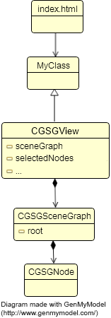

{{project.name}} is an object oriented framework and there are 2 (slightly identical) ways to develop an application with the framework :
<html>
<head>
<meta charset="UTF-8"/>
<meta http-equiv="Content-type" content="text/html;charset=UTF-8"/>
<!-- avoid moving the view with finger on touch screens -->
<meta name="viewport"
content="width = device-width, initial-scale = 1, minimum-scale = 1, maximum-scale = 1, user-scalable = no"/>
<link id="theme" rel="stylesheet" type="text/css" href="css/themes/gray/grayTheme.css" title="theme"/>
<!-- the framework -->
<script type="text/javascript" src="js/cgscenegraph_2.1.0.min.js"></script>
</head>
<body>
<!-- Define the canvas -->
<canvas id="sceneCanvas" width="400" height="400">
Your browser does not support the canvas element.
</canvas>
<!-- Instanciate your main class, which inherit from CGSGScene -->
<script type="text/javascript">
var canvasScene = document.getElementById("sceneCanvas");
var game = new CGSGView(canvasScene);
createScene();
//start to play !
game.startPlaying();
/**
* Just create a single node (a square node)
*/
function createScene () {
//create a square node : x, y, width, height
var squareNode = new CGSGNodeSquare(60, 20, 200, 200);
//add some nice properties
squareNode.isResizable = true;
squareNode.isDraggable = true;
//add the square node as the root of the graph
game.sceneGraph.addNode(squareNode, null);
}
</script>
</body>
</html>

By inheriting from CGSGView, your main class will encapsulate all properties and methods of the framework, letting your file as clean as possible.
The HTML file has to encapsulate a <canvas> tag, with an id, and to instanciate the JavaScript Main class:
<html>
<head>
<meta charset="UTF-8"/>
<meta http-equiv="Content-type" content="text/html;charset=UTF-8"/>
<!-- avoid moving the view with finger on touch screens -->
<meta name="viewport"
content="width = device-width, initial-scale = 1, minimum-scale = 1, maximum-scale = 1, user-scalable = no"/>
<link id="theme" rel="stylesheet" type="text/css" href="css/themes/gray/grayTheme.css" title="theme"/>
<!-- the framework -->
<script type="text/javascript" src="js/cgscenegraph_2.1.0.min.js"></script>
<!-- your main class -->
<script type="text/javascript" src="js/mainApp.js"></script>
</head>
<body>
<!-- Define the canvas -->
<canvas id="sceneCanvas" width="400" height="400">
Your browser does not support the canvas element.
</canvas>
<!-- Instanciate your main class, which inherit from CGSGScene -->
<script type="text/javascript">
var canvasScene = document.getElementById("sceneCanvas");
var game = new App(canvasScene);
</script>
</body>
</html>
/*
To create a new class that inherit from a class "Parent":
var MyClass = Parent.extend(
{
//constructor :
initialize : function(param1, param2) {
//each properties defined with "this." is global to the class
this.x = param1;
},
myMethod : function(x) {
}
}
);
Then, to instanciate it:
var instance = new MyClass(23, 54);
*/
var App = CGSGView.extend(
{
// 'initialize' is the constructor. It takes here 1 parameter : a handler to the canvas HTMLElement
initialize : function (canvas) {
//call constructor of the parent : CGSGView
this._super(canvas);
//Fill the graph with your nodes
this.createScene();
//start to play !
//this method is from the framework
this.startPlaying();
},
/**
* Just create a single node (a square node)
* @method createScene
*/
createScene : function () {
//create a square node : x, y, width, height
var squareNode = new CGSGNodeSquare(60, 20, 200, 200);
//add some nice properties
squareNode.isResizable = true;
squareNode.isDraggable = true;
// !!! never use squareNode.position.x = n;
// use squareNode.translateTo(n, m) method instead (or .translateWith(x, y) or .translateBy(x, y)
//
// In the same way, do not use node.rotation.angle = x, node.scale.x = x neither node.dimension?width=w
// always use the rotateBy, rotateWith, rotateTo, scaleBy, scaleWith, scaleTo, resizeWith, resizeBy, resizeTo methods.
//add the square node as the root of the graph
CGSG.sceneGraph.addNode(squareNode, null);
}
}
);